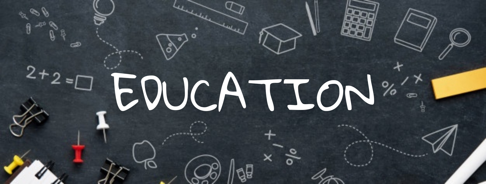
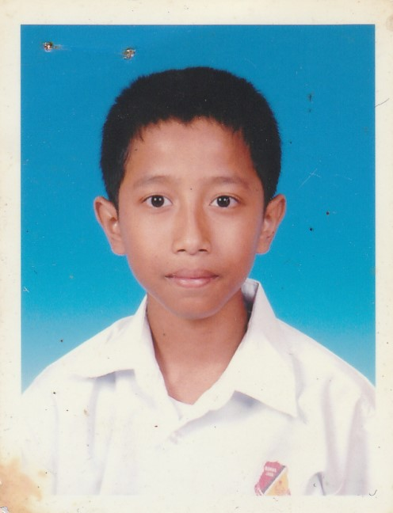
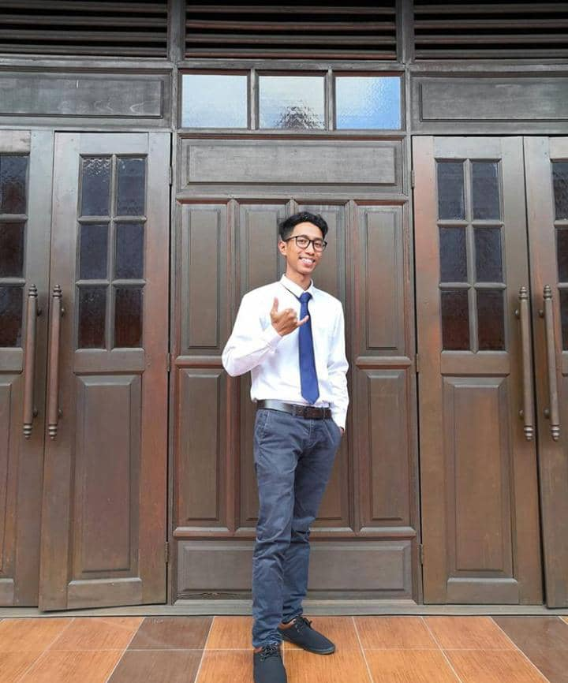
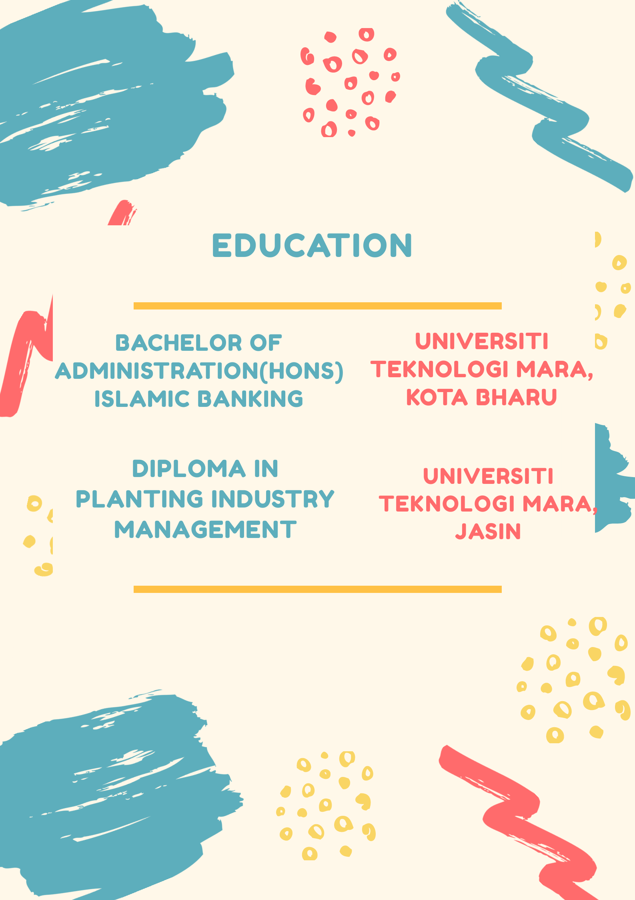

HOMEPAGE
BIODATA
EXPERIENCE
EDUCATION
FAMILY
GALLERY
HOBBY
Primary School

I went to primary school in 2005 until 2010. I went to school at Sekolah Kebagsaan Seri Makmur. My school is located in Sungai Besar, Selangor. With the atmosphere and scenery of the paddy fields that I can see every time I go and back from school makes me happy. Bitter and sweet memories when I was in primary school taught me a lot in socializing and making friends. When I was in primary school, I was an athlete who represented the school in running events at the district sports. Finally, when I was in primary school I got a pretty good result in the exam during UPSR. I managed to get 4A and 1B results in my UPSR.
Secondary School
.jpg)

Okay now I'm moving to high school anyway. Alhamdulillah, with my good UPSR results, I was able to enter one of the great schools in the district. When I was in high school I went to school at SMKA Simpang Lima. All I know is that I was able to enter the school, I feel grateful and happy. In the process of learning and teaching for 5 years in high school taught me a lot to be a useful person and also taught me a lot in terms of aspects of life in the future. I learned a lot of new and unforgettable things that I gained while attending school here with my teachers and comrades-in-arms during these 5 years. I enjoyed getting to know my friends while in high school. Alhamdulillah when occupying PMR I was the last batch to take PMR. I am thankful for successfully getting results 6A, 2B and 1C during PMR. Alhamdulillah, during SPM, I got good results and qualified me to continue my studies at university. The experiences and memories I gained during my school days I will never forget.
University
